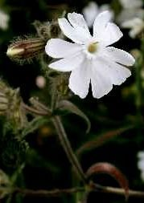

Alison Brackenbury
In the gap
Listen. No, look. The last campion
White in the hedge’s dark.
What is campion?
A ragged flower
Tall as a child
With a slender leaf
Red in the hedge’s dark.
But is it rare?
As all things are
In the autumn dusk
In air as sharp
As a half-ripe berry,
Your speeding car.
What will it give me
If I stop
With my keen eye
My heart’s delight?
Nothing. No thing.
A crow’s cry. Night;
White throat the wind strokes.
Listen.
Affairs
Miss Monson came from Lincolnshire. So did I. As yet
I am not the only daughter of a wealthy baronet.
How respectful was her lawyer’s smile.
Miss Monson moved to Cheltenham. So did I. But then
The cattle browsed by High Street upon common land, a fen.
Enclosure came. How broad the lawyer’s smile!
My house has three small bedrooms. Miss Monson built up nine.
Her pleasure gardens ate their fields, would sink and swallow mine,
As her crisp notes were melted by his smile.
She built a towering terrace. She named an avenue.
Stairs swept, iron wrought, the new roof soared. Her debts were mounting too.
A woman of your talents need not trouble, breathed his smile.
Miss Monson came to London. How hard, her nephew said,
She bluffed, then cried. The bank had failed. The list of fees was read.
Where was the charming lawyer with his smile?
She hid in France, she slipped back. She paid small bills, grew old.
Tanks loom like roofs by sweated troops. A man steps, sharp and cold,
The crude oils splash, the white teeth flash. We pay the lawyer’s smile.
Plucked from
I have been grey for years.
How did brows keep
Their darkness? But no more.
One hair is sleek
Ticked grey. Busy badger,
See the heap
Of cracked stones I dislodge.
Though fingers weep
Mud, blood, I scrabble on.
For I would sleep.
I breathe the wet, fresh earth.
I will dig deep.
Alison Brackenbury was born in Lincolnshire in 1953 and studied at Oxford. She now lives in Gloucestershire, where she works as a metal finisher. She is published with Carcanet, and her collections include; Dreams of Power (1981), Breaking Ground (1984), Christmas Roses (1988), Selected Poems (1991), 1829 (1995), After Beethoven (2000) and Bricks and Ballads (2004). Her website is at http://www.xpf13.dial.pipex.com/index.shtml.
|